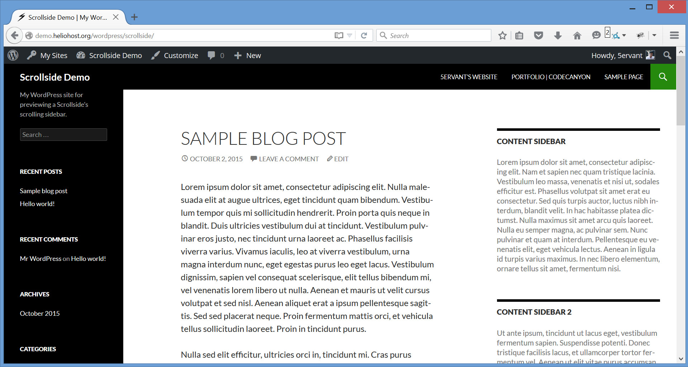
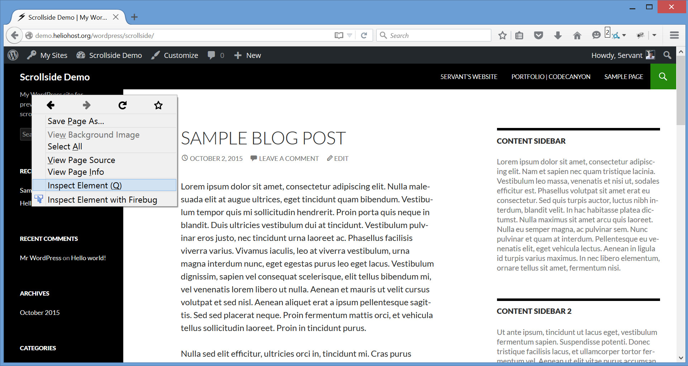
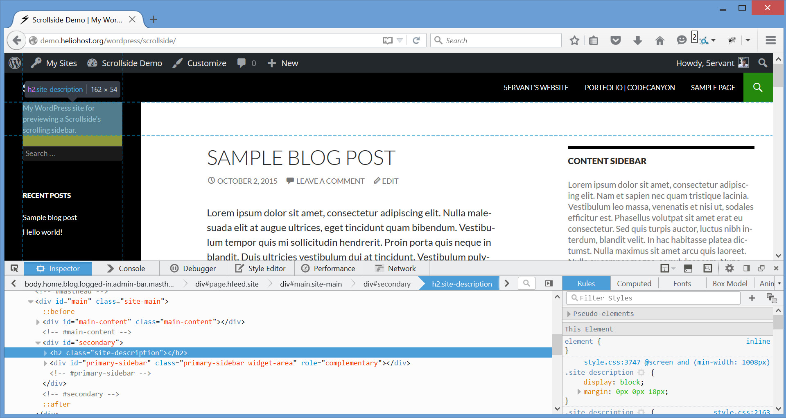
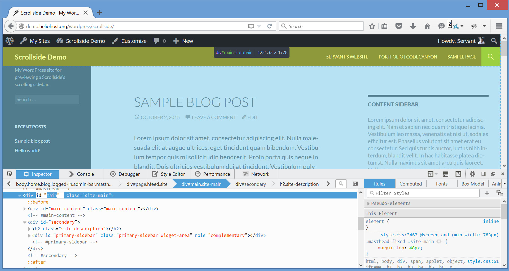
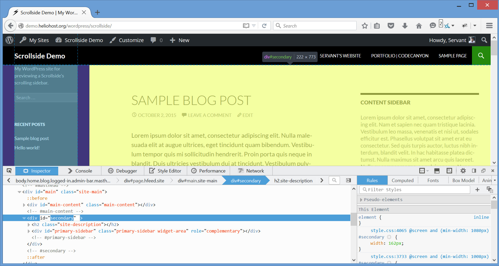
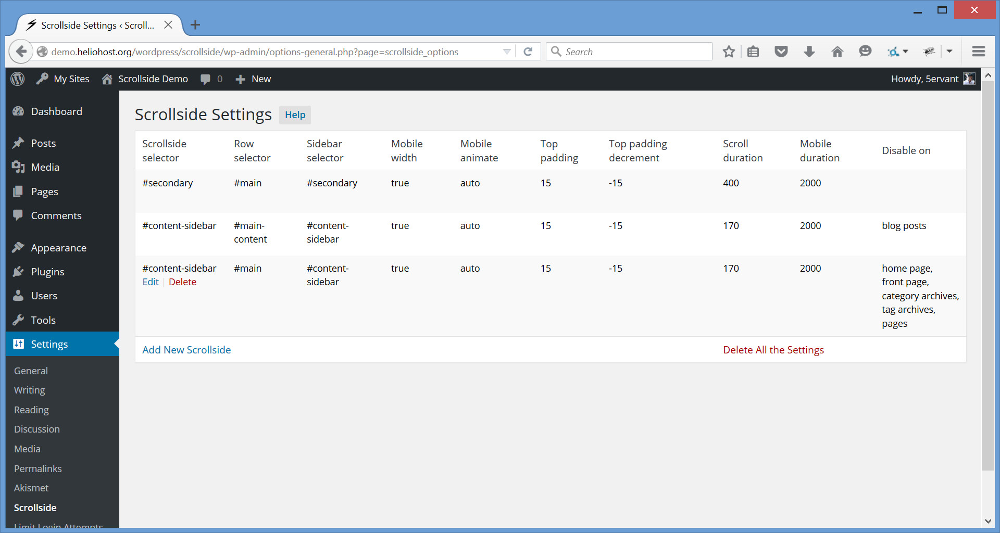

Updated: 10/16/2015
By: Mark Anthony B. Dungo
Email: 5ervant [@t] protonmail [d0t] com
If you already purchased and downloaded the Scrollside's WordPress plugin in a .zip format, you may now follow these instructions:
After activating, you can now see the "Scrollside" options page under the "Settings" menu, go to that page to start configuring the plugin.
What we need to do is to set the 3 HTML elements that represents the row, sidebar's container and the specific sidebar that you want to dynamically scroll and follow the user scrolls.
Lets say we will configure our plugin to "Add New Scrollside" settings for the left sidebar of a Twenty Fourteen theme. Let's open our homepage in Google Chrome or in Mozilla Firefox:
Point our mouse to the very top content of our target sidebar, click the right mouse button then after that, click "Inspect Element":
Here's the example that you'll going to see after the previous instruction, the Developer Tools will be displayed on the bottom:
In the Developer Tools, search upwards for the very first row's element by moving your mouse. The element you're hovering will be highlighted. Search for the first row's element that highlights all the entire area of the sidebar and the main content of the site. It usually has the ID or class name of "main", "site-main", "content" or "site-content".
In this example, the row has the ID of "main". To identify it, we can use the "#main" selector (notice that it's preceded with a "#", meaning that it's an "ID"). If ever the row didn't have that ID, we could have used its "site-main" class and identify it like ".site-main" (just preceded with a dot if it's a "class").
And because the left sidebar of a Twenty Fourteen theme doesn't have a sidebar's container or an outer sidebar, we will assume that the sidebar's container and the sidebar are one..
Now we must do the same thing to find our sidebar. Point our mouse to the element that highlights the entire sidebar and get its identifier. It usually has the class "widget-area". In this example, we got the "#secondary" ID selector to identify it.
Finally, we're going to "Settings -> Scrollside" from the administrative "Dashboard". In the "Scrollside Settings" page, click "Add New Scrollside" and input "#secondary" into both the "Scrollside selector" and the "Sidebar selector", and "#main" into the "Row selector":
If ever your sidebar has an outer sidebar or is inside of a sidebar's container, you may put the sidebar's container selector into the "Scrollside selector" field where it truly belongs, and the inner sidebar selector into the "Sidebar selector".
If you have any issues, you can contact me or drop a comment in the discussion of this item on CodeCanyon with your website address and tell the specific sidebar that you want to scroll, and I'll try to find these selectors for you.
You can add more Scrollside Settings for different sidebars on your WordPress site, you can also delete or modify it. Here's the example of the settings for all the sidebars of a Twenty Fourteen theme:
In case you have two different sidebar's containers with the same class name on a single row in the same web page, you can just add a single Scrollside Settings for those two scrollsides by providing their "Row selector", their identical class selector for the "Scrollside selector" field and their "Sidebar selector".
Bootstrap Grid System CompatibleIt's Bootstrap 12-column grid system compatible! If your theme is using Bootstrap grid system and you want to make the mobile responsiveness rely in a predefined grid class col-*-* of your scrollside, here's a few things to consider:
col-*-* to input its unique CSS selector into the "Scrollside selector" field..row", the class "row" is a Bootstrap predefined grid class for a row's element.true".Here's the overview of the Scrollside Settings' fields:
| Name | Type | Default | Description |
|---|---|---|---|
| Scrollside selector | CSS selector | #secondary | A .class-name, #id-attribute or any CSS selector for the sidebar's container that'll become a scrollside, or any selector for the sidebar if you doesn't have an outer sidebar. |
| Row selector | CSS selector | #main | CSS selector for the row's element that contains the sidebar, main content's element and the other element(s) if any. Set to .row if your theme is using Bootstrap grid system. |
| Sidebar selector | CSS selector | >:first-child | CSS selector for the sidebar that's inside of the sidebar's container or outer sidebar. By default, it will select the first child element of the scrollside to be the sidebar. If your sidebar doesn't have an outer container, you can just put your sidebar's selector (not the default one) in both "Scrollside selector" and "Sidebar selector" fields. |
| Mobile width | number or boolean | true | The max-width (in pixels) of the document for mobile view where the sidebar's top-margin will set back to its original position and will start moving again when the viewport become above it. Just set to true for automatic mobile width or if your theme is using Bootstrap grid system, or false for forever moving sidebar. |
| Mobile animate | 'auto', 'css' or 'scroll' |
auto | Mobile animation will only perform if the desktop view become in mobile. The default auto will auto scroll back the sidebar to its original position. Setting to css will auto statically set back the sidebar without animation. And scroll is just like the auto but the animation will only perform when you scroll. |
| Top padding | number | 15 | Not a literal top padding, it's an additional margin-top (in pixels) of the sidebar when it's moving. |
| Top padding decrement | negative number | -15 | Must be a negative number, it's the "Top padding" decrementation if the sidebar's bottom reaches the row's bottom. It's very useful if your row's element is unexpectedly increasing its height due to the reaching of the moving sidebar on its bottom. |
| Scroll duration | number or the string 'fast' or 'slow' |
400 | Milliseconds to complete the sidebar's moving animation per scroll. The strings fast and slow can be supplied to indicate durations of 200 and 600 milliseconds. |
| Mobile duration | number | 2000 | Milliseconds to complete the moving back to the original position of the sidebar if the desktop view become mobile view. This will only effect when the "Mobile animate" is not set to css. |
After successfully configuring a scrollside, if the row's height in your web page is unexpectedly increasing INFINITELY when the sidebar's bottom is reaching the row's bottom upon down scrolls (this may happen if the sidebar isn't the first child element of the scrollside), then you can try to make the "Top padding decrement" more negatively like -50, -75, -100 or more depends on the additional top/bottom margin or padding of your inner/outer sidebar or of the other element(s).
I've included the following JavaScript library.
5ervant (Mark Anthony Dungo)
{kind=link}
{kind=link}
{kind=link}
{kind=link}
{kind=link}
{kind=link}
{kind=link}